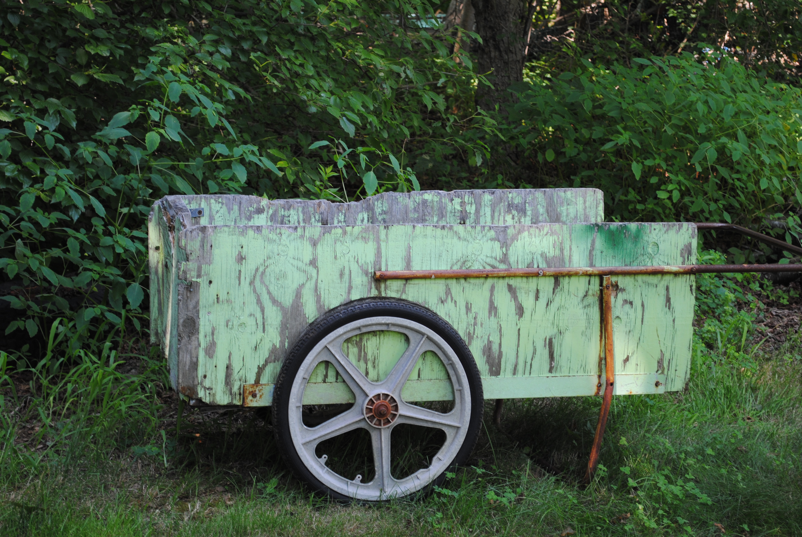
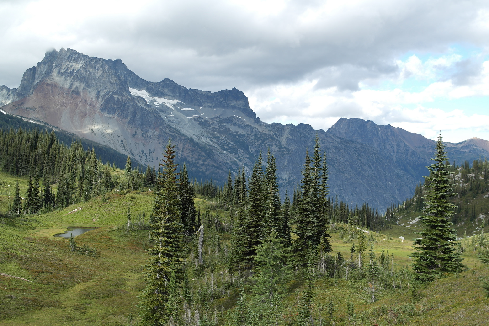
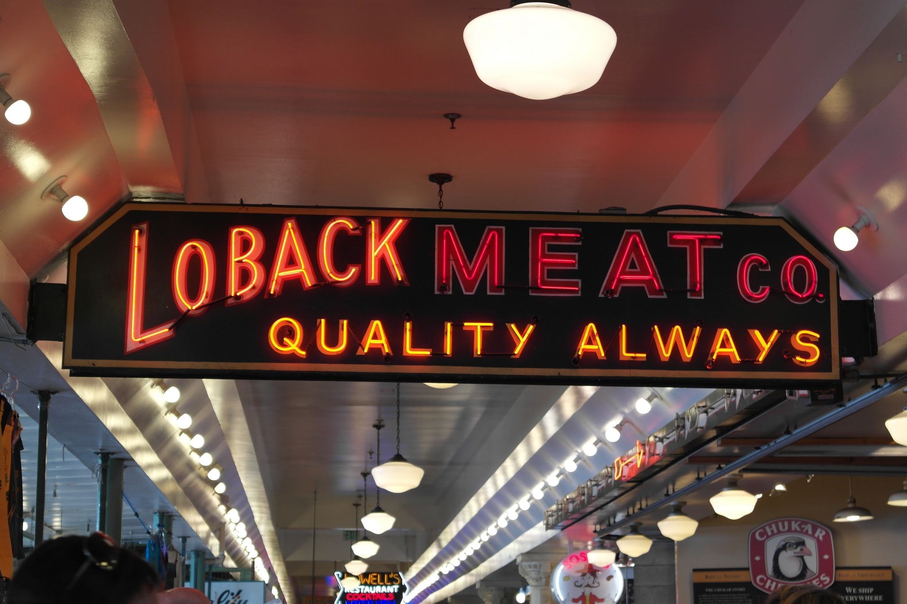
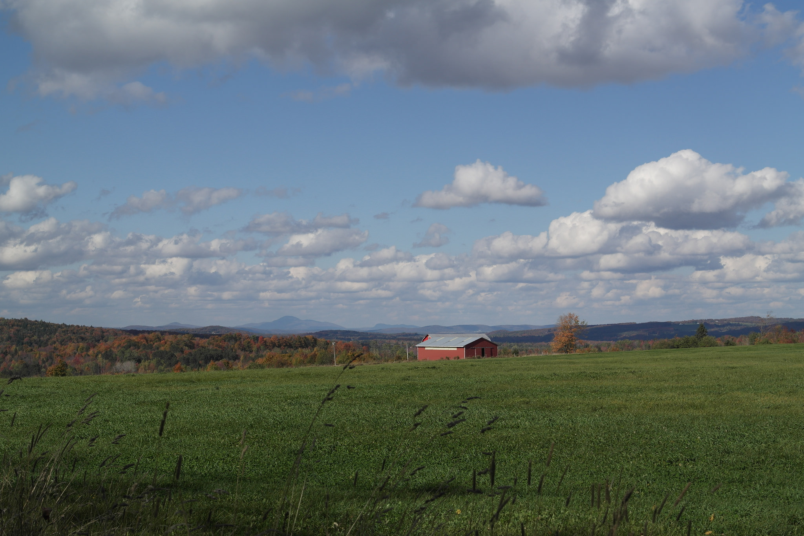
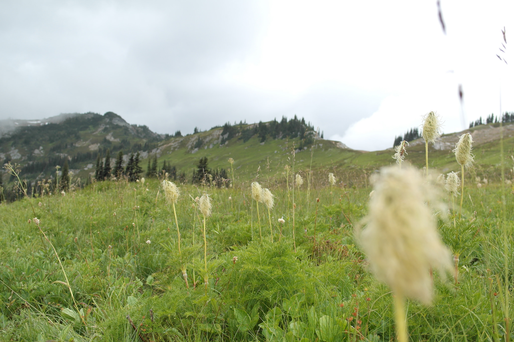
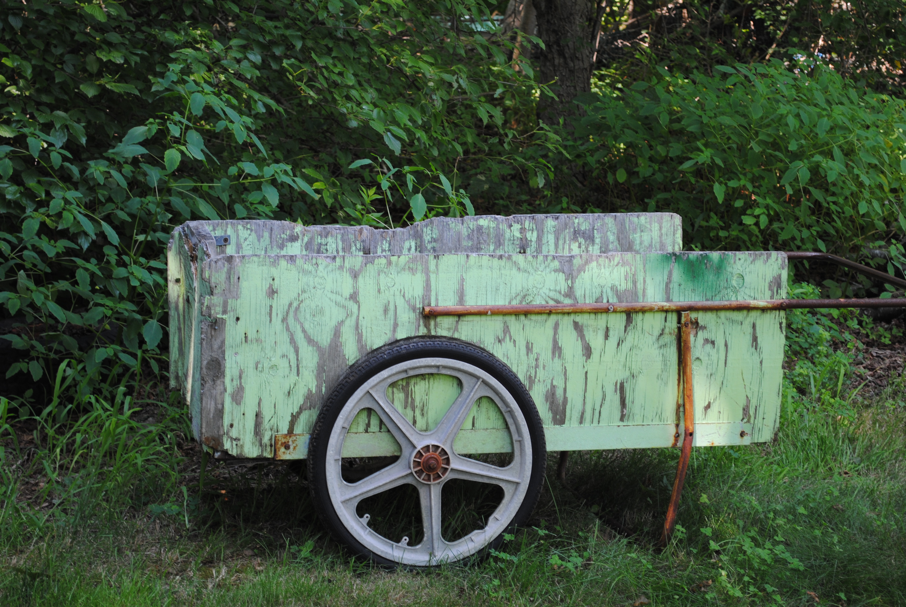
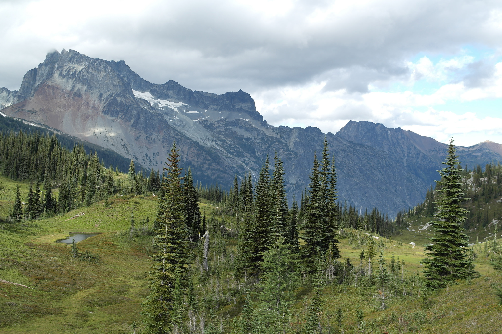
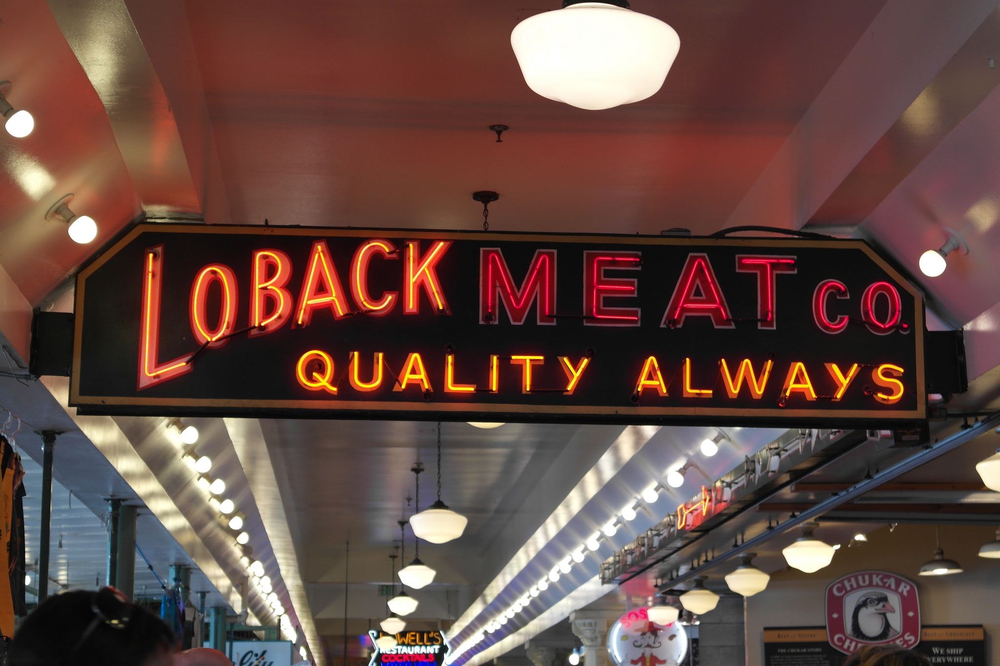
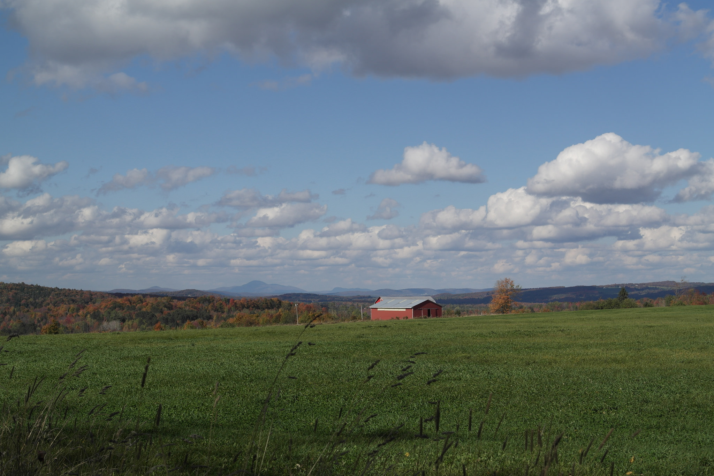
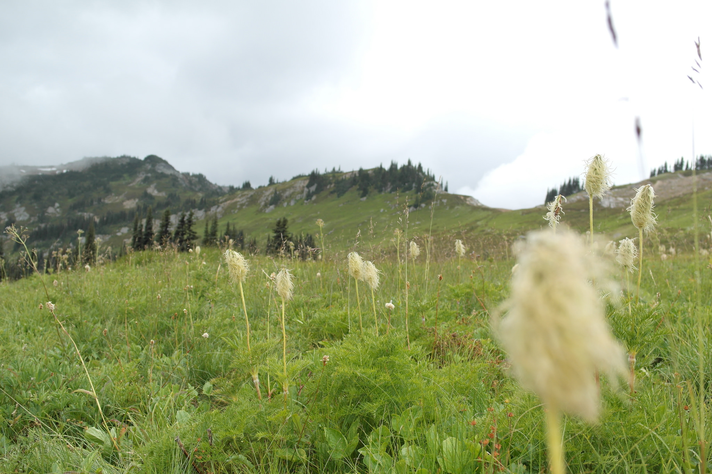

Software Engineer.
Absurdly focused, motivated, determined. Rising up from next to nothing, I am a well experienced, proven, and successful software developer with lots of interest in software that is used to solve real-world problems. Away from the computer, you can find me in the woods hiking, running, or bicycling, or, most certainly in the winter, downhill skiing the best snow and terrain I can find. Occasionally, you can find me on an expedition on things like Mt. Rainier (2016), or climbing walls of rock or ice. Even more occasionally, you will find me behind a lense experimenting with new ideas in photography.
Pushing myself to my very physical limits keeps my mind and heart centered and helps me focus on my work back at home in a way I never thought possible. To back up a bit, and explain how this all really happened, I'll start with my very first world adventure when I was merely 14 years old. While attending high school as a freshman and working a full-time job at a local super market, I managed to save a good sum of money and bought a bus ticket to Mexico City in November 2004. I set my sights on this new, scary city and looked forward to what my adventures would bring. With a small group of friends, who were from the area, we set off to start a niche start-up organizing promotional events, marketing campaigns, and medical conferences. I found myself, cold-calling, delivering packages of brochures, and eventually, setting up our website and local server. This was my first experience in information technology and web development and I was quickly hooked. I created a client's site within a few weeks of acquiring the contract in buzz-worthy FLASH and another website for a local theater. I flew weekly to L.A. - initially for contract negotiations with what would be our biggest client, and eventually for logistical planning and management. What a ride.
By the time I turned 18, I knew that I would eventually need to return to Boston for college, which is exactly what I did. I passed my high school equivalent exam within a week of being back in the country and enrolled in a local community college where I graduated two years later with a 3.9 GPA while working full-time. I was soon accepted into a competetive, advanced computer science program at Boston University, where I spent the next two years learning the real stuff from the ground up. Fast forward 3 years - I'm now a well established developer in the Boston area with exceptional references and cool projects to show off. When I find the work, I like doing free development for awesome projects, local charities and non-profit organizations. Really, I simply try to work on things that I find meaningful.
I'd love to connect with you if you have any interesting projects related to software development, travel, climbing, skiing, or photography. I'm always up for an adventure or to meet that deadline you're probably dreading.
 








